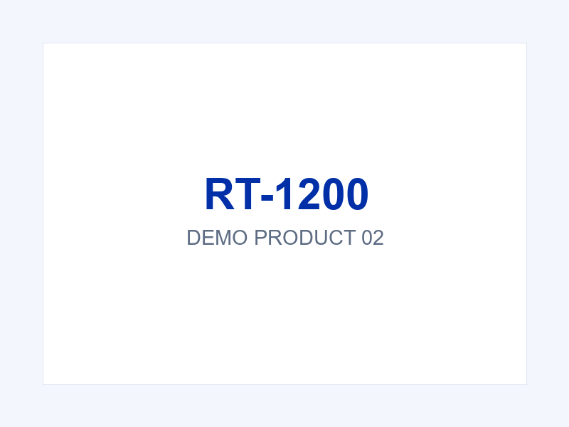

← All products

Office & Archive Series
A3 Document Camera Scanner
A rigid, single-screw document capture station for counters and archives: 10 MP stills of A3-to-ID documents in about a second, OCR and barcode output, and TWAIN/SDK hooks into your existing systems.
No folding joints to wear out — rigid head and pole by design.
Documents land in the right place — integrated copy stand with corner guides.
One cable — USB 2.0 carries power and data, under 2.5 W.
1-second capture from A3 down to ID cards, five-level LED fill light.
Software beyond the photo — OCR, barcode decoding, TWAIN driver and SDK.
Documents land in the right place — integrated copy stand with corner guides.
One cable — USB 2.0 carries power and data, under 2.5 W.
1-second capture from A3 down to ID cards, five-level LED fill light.
Software beyond the photo — OCR, barcode decoding, TWAIN driver and SDK.
Specifications
| Capture | 10 MP CMOS main camera + 2 MP secondary lens |
| Formats | A3, A4, A5, A6, A7, business cards, ID documents |
| Speed | ~1 second per capture |
| Fill light | 5 LEDs, 3-level adjustable |
| Structure | Rigid (non-folding) head and pole; integrated copy stand with corner guides |
| Dimensions / Weight | 360 (L) × 330 (W) × 400 (H) mm, ~600 g |
| Materials | ABS head, aluminium alloy pole, ABS base |
| Connection | USB 2.0 (power + data), driver-free, <2.5 W |
| Software / Expansion | OCR, barcode/QR recognition, image management, recording, watermark; TWAIN driver; SDK (B/S & C/S); 1–3 USB ports for ID card, fingerprint or audio modules |
Where it is already working
Government service windows: material archiving without a flatbed's slow lid dance — staff shoot, the system OCRs, the file is filed.
Bank counters: document and ID capture in one motion, with the image pipeline feeding the core system via SDK.
Hospitals and archives: batch digitisation of records up to A3 at a pace flatbeds cannot match, with barcode recognition for folder indexing.
Frequently asked questions
How is a document camera different from a flatbed scanner?
Speed and workflow. A flatbed produces a pixel-perfect scan but takes 10–20 seconds per page with lid handling; a document camera captures in about a second with no lid — ideal for counters and high-volume archiving where "good image, fast" beats "perfect image, slow".
Does it work with our document management system?
If your system accepts TWAIN or has an SDK/integration path, yes — that covers most DMS and line-of-business systems. We provide the TWAIN driver and SDK with integration documentation.
Can it read OCR and barcodes in the same pass?
Yes — the bundled software performs OCR, barcode/QR decoding and image processing on each capture, and outputs to your system via the integration layer.
Is the image quality enough for archival standards?
10 MP is sufficient for A3 documents at readable archival quality. If your standard mandates 300 DPI flatbed scans for specific record classes, a hybrid workflow (camera at counters, flatbed in the back office) is common — we can advise.